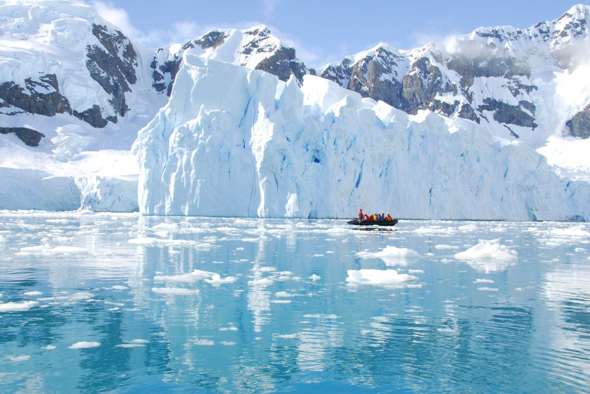

Antarctica is the coldest continent on Earth. The average temperature in the interior throughout the year is about -57°C, with the minimum temperature being -90°C during the winter season. Although the coast is warmer and temperatures can reach a maximum of between -2°C and 8°C during the summer. It is, on average, the coldest, windiest, and driest of all the continents on Earth.
Technically, Antarctica is a desert because it is so dry there; with an average annual precipitation of just 166mm along the coastal regions, and even less when moving further inland. With such cold conditions the snow hardly ever melts; instead, it will mostly become compressed over time to form part of the ice sheet. This is known as an ice cap climate (classified as a continent where the average monthly temperature never exceeds 0°C).
This ice sheet is, on average, 1.6 km thick and covers about 98% of the entire continent; this is nearly 90% of the entire world’s ice, so it’s no wonder the Antarctic climate is so cold!
Strangely enough, one can suffer serious sunburn whilst there as the snow acts as a reflector which reflects nearly all the ultraviolet rays, so although you may not feel the heat, you still need to make sure to keep your skin safe from the rays.
